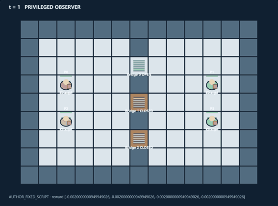
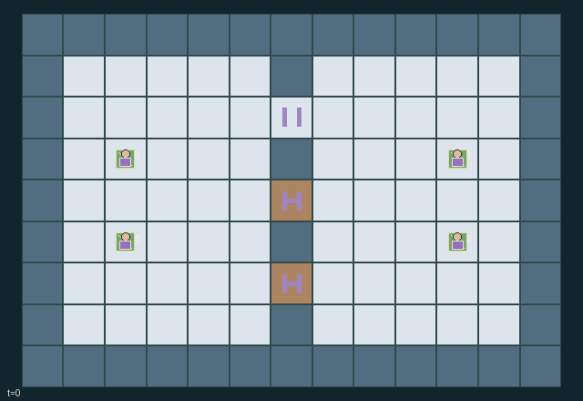

GI081 · Dockside Promises | Right-of-way is a costly promise

Original recording scope: 原回放视角 · Mode: 固定脚本演示
Additional generated state replay (different trajectory / full-state debug)

Deliver two physically carried orders per courier before their deadlines, balancing private timeliness against shared traffic, charging, route commitments and energy assistance.
Identity and original contract
4 independently actionable roles; 11 discrete commands per role; 254 native observation columns per role; original horizon 128 steps. Declared per-step reward range: -3 to 3. Observation regime: fully_observable.
Source SHA-256: 7cf4953174873acf0e3efbb70d9592a9ed3d8cadd48d96e6ae690607f247a8b4
The objective, rewards, population, map and horizon remain original. A preview is not a success claim.
Objective and gameplay
Deliver two physically carried orders per courier before their deadlines, balancing private timeliness against shared traffic, charging, route commitments and energy assistance.
A bonded, expiring shared corridor reservation changes other robots legal routes. Opposite-side yielding accelerates admission, prevents the yielder entering the corridor, and can earn a credit only after a real partner crossing. Occupancy, mutually consented swaps, finite batteries and shared-capacity chargers create additional concrete resource and route dependencies.
- Carry your own parcels to their exact opposite-dock targets. One order per robot starts now; the second is released at time 36. Deadlines are 55 and 115.
- Ordinary movement cannot enter a currently occupied robot cell. Empty travel costs one battery; carried travel costs two.
- Central corridor cells (5,4) through (7,4) admit the current lease holder. A robot already inside can clear it after expiry; new grants wait until it is empty.
- A request deposits one service credit, lasts ten steps and states crossing direction. It is eligible after four queue-age steps or immediately when an opposite-side robot is yielding.
- An eligible oldest request wins with rotating tie priority and receives an eight-step lease. The bond returns only after the holder actually enters and reaches the requested opposite side.
- Yielding binds a robot to avoid the central corridor for six steps and relinquishes an existing claim without refund. A real opposite-side partner crossing can reward that promise once.
- North bridge follows phase 0-3 and south bridge phase 6-9 of the twelve-step tide. An occupied bridge remains open to let its robot clear.
- A charger gives six energy to one adjacent robot per step. Adjacent robots can transfer two energy; mutually offered swaps exchange positions and cost two energy each.
- Individual delivery rewards favor timely own orders; small common delivery/expiry terms make other robots outcomes matter. Expired parcels remain recorded as failures.
- All positions, requests, commitments and parcel states are actual public state. The episode ends when all parcels are settled, preserving mixed delivery and expiry outcomes.
Ending: The episode naturally ends once every parcel is delivered or expired. Success means all eight were delivered; mixed outcomes remain explicit. Otherwise truncate at 128, with natural completion taking priority.
What this game explores
Resource commons & externalities: An action changes a persistent resource or burden that another role also encounters. Compare extraction with maintenance and record the downstream resource trajectory.
Commitment, exchange & governance: Promises consume time, liquidity, access or material. Separate an announced agreement from a binding commitment and from its eventual delivery; log cancellation and expiry too.
Joint transport & shared access: Positions, load geometry, occupancy and persistent access constrain whose action can succeed next. Distinguish physical handoff, shared controls and simultaneous force from a cosmetic cooperation label.
These are questions supported by rule structure, not observed learning effects.
Play it: operating walkthrough
crucibles play --game gi081Keep Python running and open its printed address. Select this game, set a seed and press Create session. The game itself is always English.
Assign a role range to Host with Assign / take over, or Assign all roles. Invite a second participant with Create player invitation, then assign a disjoint subset. Every original role is available.
For every owned role choose a legal command and press Queue. Arrow keys / WASD queue a declared directional action for the current role camera when available. Space or Advance one joint step advances everyone together. Non-directional games use the selectors.
Unqueued roles use the labelled untrained uniform-legal policy. Take over or release roles before the next step without resetting. Full-state debug is privileged and permanently logged; role cameras preserve permissions. Close the session to retain logs. Server restart does not restore sessions.
Complete command reference
IDs and English labels exactly match the manifest. Availability depends on role, resources, location and phase. An available action can still have no productive effect.
0·Wait
1·Move north
2·Move east
3·Move south
4·Move west
5·Pick up own adjacent waiting parcel or unload at its exact target
6·Post a bonded request for central right-of-way
7·Pledge six-turn yielding and relinquish pending/current claim
8·Charge six energy at a neighboring dock charger
9·Transfer two energy to adjacent lowest-battery robot
10·Offer bilateral adjacent swap; both must choose this action
Roles and capability identifiers
These original role names describe capabilities, not interchangeable skins. Check each owned role's legal selector before planning handoffs.
agent_0·Northwest origin courier delivering to southeast dock
agent_1·Northeast origin courier delivering to southwest dock
agent_2·Southwest origin courier delivering to northeast dock
agent_3·Southeast origin courier delivering to northwest dock
Information and observation permissions
The complete board, positions, parcel contracts/status, energies, credits, requests, queue ages, binding commitments and leases are public; each role receives an identity one-hot. Intent becomes public through an actual paid request or binding yield state. No hidden policy-only observation is supplied by rendering.
The GIF is full-state debug and may reveal hidden entities or private state. Train on obs[agent], not the picture, state tree or another role's private row. Field slices and visibility are in the original manifest.
Reinforcement-learning integration
import jax
from crucibles_jaxmarl import make
env = make("gi081")
key = jax.random.PRNGKey(0)
key, rk, ak, sk = jax.random.split(key, 4)
obs, state = jax.jit(env.reset)(rk)
actions = env.sample_actions(ak, state)
obs, state, rewards, dones, info = jax.jit(env.step_env)(sk, state, actions)
done = dones["__all__"]Observations are float32 vectors of width 254; actions are scalar int32; masks have 11 entries. Supply all 4 roles each transition. Masked sampling is an engineering reference, not a trained learner.
step_env retains terminal data without reset. step performs outer autoreset and keeps terminal data in info["raw_state"] and info["raw_observation"]. Use dones["__all__"] for episode boundaries; separate completion, failure and time limit in analysis.
JIT or vmap equal identities and shapes. Split independent reset, policy and transition keys. Group different shapes explicitly; do not shrink the population or horizon. Host rendering stays outside training.
Training questions and fair evaluation
Define valid completion from the objective before fitting. Preserve original rewards and also report real deliveries/services, losses, resource state, unresolved episodes and per-role returns. Animation is not a reward signal.
An action changes a persistent resource or burden that another role also encounters. Compare extraction with maintenance and record the downstream resource trajectory.
Promises consume time, liquidity, access or material. Separate an announced agreement from a binding commitment and from its eventual delivery; log cancellation and expiry too.
Positions, load geometry, occupancy and persistent access constrain whose action can succeed next. Distinguish physical handoff, shared controls and simultaneous force from a cosmetic cooperation label.
Compare memory, communication or centralized critics under matched actor information. Declare critic access; keep actor inputs role-filtered. Match partner/opponent distributions, masks, compute and checkpoint selection. Final tests never enter fitting or selection.
Independent training runs or source-pairing blocks are inferential units; episodes from one policy are not independent training replications. Save hashes, keys, versions, device, time and cost. Negative, zero, failed and indeterminate outcomes are valid. No trained checkpoint or target score is supplied.
Classification and evidence
Overlapping editorial labels are reading aids, not proof of novelty, difficulty, strategic equivalence or learning effects.
- Resource commons & externalities
- Evidence
manifest.task.objective: Deliver two physically carried orders per courier before their deadlines, balancing private timeliness against shared traffic, charging, route commitments and energy assistance.
- Commitment, exchange & governance
- Evidence
manifest.task.objective: Deliver two physically carried orders per courier before their deadlines, balancing private timeliness against shared traffic, charging, route commitments and energy assistance.
- Evidence
manifest.task.interaction: A bonded, expiring shared corridor reservation changes other robots legal routes. Opposite-side yielding accelerates admission, prevents the yielder entering the corridor, and can earn a credit only after a real partner crossing. Occupancy, mutually consented swaps, finite batteries and shared-capacity chargers create additional concrete resource and route dependencies.
- Evidence
manifest.task.observation_access: The complete board, positions, parcel contracts/status, energies, credits, requests, queue ages, binding commitments and leases are public; each role receives an identity one-hot. Intent becomes public through an actual paid request or binding yield state. No hidden policy-only observation is supplied by rendering.
- Joint transport & shared access
- Evidence
manifest.task.objective: Deliver two physically carried orders per courier before their deadlines, balancing private timeliness against shared traffic, charging, route commitments and energy assistance.
- Evidence
manifest.task.interaction: A bonded, expiring shared corridor reservation changes other robots legal routes. Opposite-side yielding accelerates admission, prevents the yielder entering the corridor, and can earn a credit only after a real partner crossing. Occupancy, mutually consented swaps, finite batteries and shared-capacity chargers create additional concrete resource and route dependencies.
- Evidence
manifest.task.observation_access: The complete board, positions, parcel contracts/status, energies, credits, requests, queue ages, binding commitments and leases are public; each role receives an identity one-hot. Intent becomes public through an actual paid request or binding yield state. No hidden policy-only observation is supplied by rendering.
Source, receipts and preview limits
The additional generated state GIF replays saved untrained legal actions through the original kernel. At most 25 actual endpoints include initial and terminal state; no invented interpolation. It is full-state debug, not the role observation. Where an original scene preview exists, it is displayed first with its own recorded information scope. The two recordings may use different trajectories and views.
Original source, observation slices, manifest and mechanism
Native receipt · Presentation receipt
Engineering passes do not establish learning. Nonzero floating differences remain recorded and undetermined; no new tolerance was introduced. Human scores remain unverified.